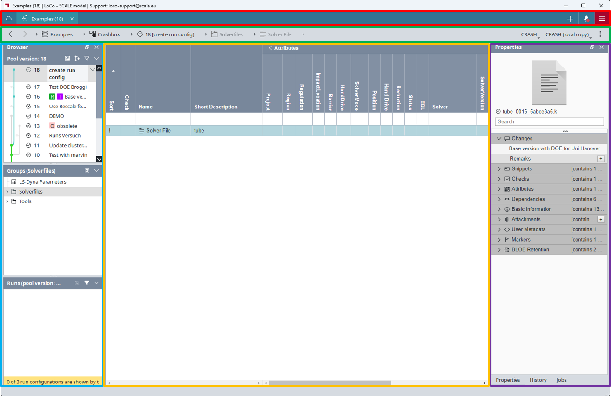
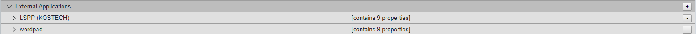
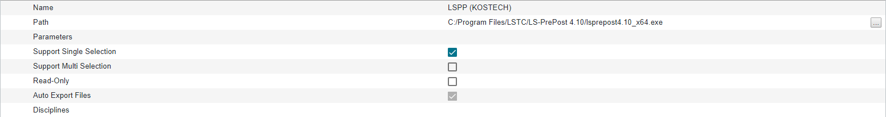

SCALE.sdm

탭 바(Tab bar)
내비게이션 바(Navigation bar)
브라우져(Browser)
데이터 테이블(Data table)
속성 탭(Properties tab)
Settings
Setting 메뉴는 탭바(Tab bar)에서 + 아이콘에서 찾을 수 있습니다.
외부 프로그램(External Application) 설정
SCALE.sdm에서 외부 프로그램(LS-PrePost, ANSA, HyperView 등)을 실행하기 위해 외브 프로그램 실행 경로 및 정보를 입력합니다.

External Application 항목에서 우측의 + 기호를 클릭합니다.

Name을 입력하고 Path에 실행하고자 하는 외부 프로그램의 실행 파일 경로를 등록합니다.
필요에 따라 Parameters 등의 옵션 항목을 설정합니다.